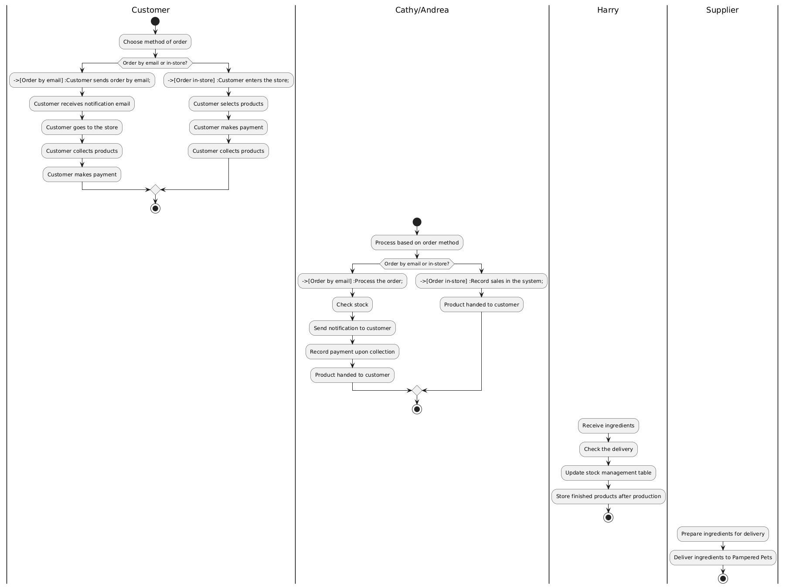

My Contributions to Teamwork
My key contribution was during the group assignment preparation. In the group activity, I created a business process diagram, but my primary role in the team was Analyst for Digitization Risks. I was responsible for assessing the risks associated with the digitization of Pampered Pets and developing the attack tree. Additionally, I took minutes of meeting (MoM) during one of our meetings
Business Process Diagram for Pampered Pets
Assessment of Risks for the Digitization of Pampered Pets
The digitization of Pampered Pets exposes the company to a wide array of risks. Using threat modeling techniques such as STRIDE, OCTAVE, Attack Trees, and CVSS, the analysis identifies and prioritizes threats by considering cybersecurity, regulatory, operational, reputational, and strategic risks.
Types of Risks Considered
- Cybersecurity Risks: These threats compromise digital systems, including hacking, ransomware, and security breaches (Gupta, Agrawal, and Yamaguchi, 2020).
- Regulatory Risks: Non-compliance with regulations like GDPR, which could result in financial penalties and harm to reputation (Kuner, Bygrave, and Docksey, 2020).
- Operational Risks: These threats impact the continuity of operations, such as service disruptions and supply chain issues (Shostack, 2014).
- Reputational Risks: Impact on customer perception, primarily due to data breaches or service interruptions (Drennan and Goudge, 2019).
- Strategic Risks: Threats that affect the company's ability to digitally evolve and meet customer demands (Anderson, 2020).
Mapping and Prioritization of Potential Threats

Explanation of Prioritization
- Very High: Critical threats to customer data and compliance (e.g., GDPR), with a strong impact on reputation and significant financial penalties (Kuner, Bygrave, and Docksey, 2020).
- High: Threats disrupting operational continuity (e.g., ransomware, DoS), leading to service interruptions and financial losses (Gupta, Agrawal, and Yamaguchi, 2020).
- Medium: Internal threats to systems (APIs, payments), moderate but requiring targeted security measures (Shostack, 2014).
- Low: Less likely threats (phishing, BYOD), manageable with solid security policies, limited impact (Anderson, 2020).
References
Anderson, R.J. (2020) Security Engineering: A Guide to Building Dependable
Distributed Systems, 3rd edition. Hoboken: Wiley.
Custers, B. et al. (2019) ‘Data Protection and Privacy: The Age of Intelligent
Machines’, Computer Law & Security Review, 35(3), pp. 312-323.
Drennan, J. and Goudge, R. (2019) Reputation Management in the Age of Digital
Influence: Lessons from the Financial Sector. New York: Palgrave Macmillan.
Gupta, P., Agrawal, D. and Yamaguchi, S. (2020) Cloud Security: Attacks, Techniques,
Tools, and Security Strategies. New York: Springer.
Kuner, C., Bygrave, L.A. and Docksey, C. (2020) The EU General Data Protection
Regulation (GDPR): A Commentary, 2nd edition. Oxford: Oxford University Press.
Schneier, B. (2015) Data and Goliath: The Hidden Battles to Collect Your Data and
Control Your World. New York: W.W. Norton & Company.
Shostack, A. (2014) Threat Modeling: Designing for Security. Hoboken: Wiley.